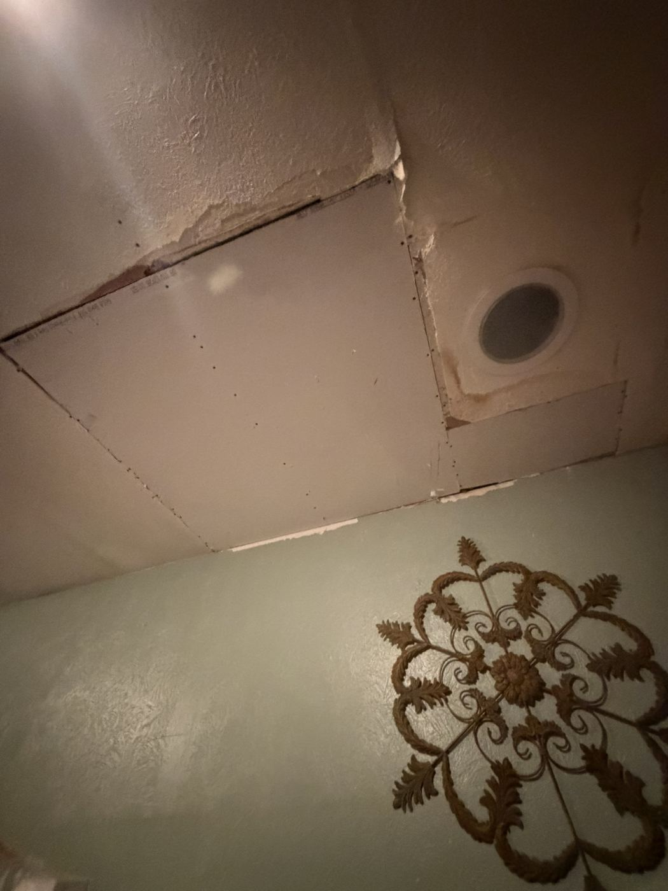
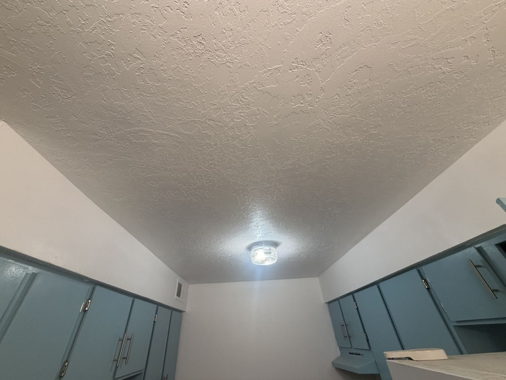
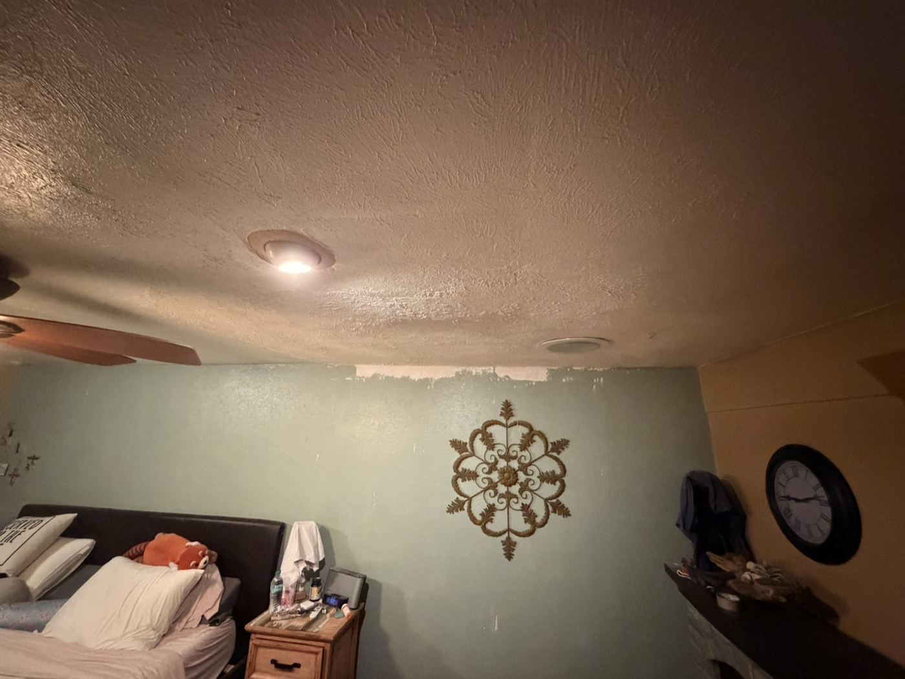

Sheetrock repair · Albuquerque, NM
Drywall Patch & Texture Match in Albuquerque
Holes, cracks and ceiling damage patched so you can't find them. Our sheetrock crew matches your existing texture in Albuquerque, Los Lunas and Santa Fe.
- Albuquerque
- Los Lunas
- Santa Fe
Why Mano Experta
Texture matching is our daily work
- Union carpentry background with Carpenters Local 1319.
- 7 years in business serving Albuquerque, Los Lunas and Santa Fe.
- Alex is foreman of the "She-Rockers," a 3-man sheetrock crew that hangs, tapes and textures every day.
- Orange peel, knockdown, hand-applied and smooth finishes, blended so the patch fits the wall around it.
- Free estimates · English y español.
Real photos
Recent drywall work

Sheetrock ceiling patch 
Ceiling texture 
Textured bedroom ceiling
Typical prices
What a drywall patch usually costs
Per hole
$50–$400
Doorknob holes, anchor holes, small cracks and dents, patched and textured.
Typical repair
$200–$750
Larger patches, multiple holes or a ceiling section, with texture matched.
Water damage
Quoted on site
Quoted separately after an inspection, once the leak source is fixed.
These are typical ranges, not fixed prices. Your final price is set after Alex sees the damage.
Questions
Drywall patch FAQ
How long does a patch take?
A small patch can often be started and set in the same visit, but joint compound needs multiple coats and dry time. Typically a patch with texture and paint takes 1–3 days from start to finish.
Can you match my texture?
Yes. Texture matching is daily work for our sheetrock crew: orange peel, knockdown, hand-applied and smooth finishes. We test and blend so the patch fits the wall around it.
Do you handle water damage?
Yes. Water-damage repairs are quoted separately after an inspection. The leak source needs to be fixed first so the new drywall doesn't get damaged again.
Is a permit needed for minor patching?
Minor patching typically doesn't need a permit in Albuquerque. Larger jobs, structural work or major water-damage repairs may, so it's worth checking with the City before work starts.
Free estimate
Get a drywall quote
Send a few details and a photo of the damage. Alex will get back to you.
Prefer to call or text?
505-900-1392Prefer email? Send photos to Finnawork100@gmail.com